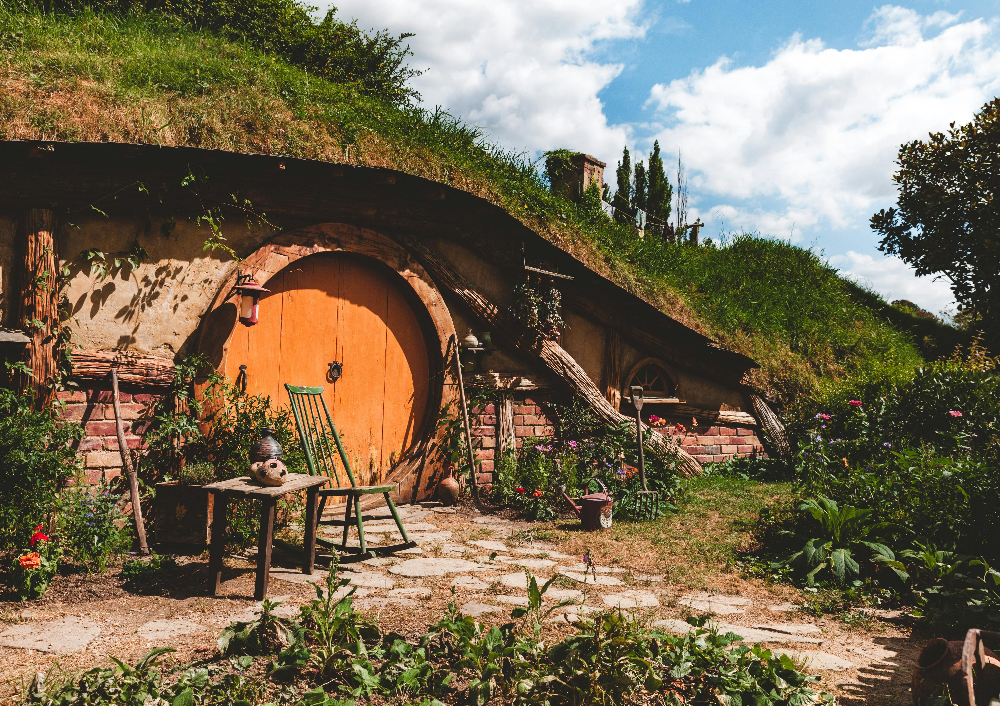

Városi kertészkedés – a természet a mindennapjaidban.
A városi élet gyors tempója mellett is elérheted a zöld oázist a saját otthonodban! Akár egy kis erkélyről, akár egy mini kerttel rendelkező udvarról van szó, a városi kertészkedés nemcsak szórakoztató, hanem segít közelebb hozni a természetet, friss, bio alapanyagokhoz juthatsz, és hozzájárulhatsz a környezetvédelemhez.
Miért kezdj bele?
Friss, egészséges ételek: Fűszernövények, zöldségek és gyümölcsök közvetlenül a saját kertedből. Ökológiai lábnyom csökkentése: Kevesebb műanyag, kevesebb vegyszer, több zöld! Szórakoztató hobbi: A kertészkedés nemcsak hasznos, de kikapcsolódást is nyújt.
Mit találsz nálunk?
Tippek kezdőknek: Hogyan állj neki, ha még sosem próbáltad? Növénytippek és trükkök: Milyen növények illenek a kis erkélyedhez vagy ablakpárkányodhoz? Gyakorlati tanácsok: Hogyan ápolj és nevelj zöldségeket, fűszereket otthon?
Közösségünk
Mi nem csak tanácsokat osztunk meg, hanem egy igazi kertész közösséget építünk! Itt megoszthatod a saját kerted képeit, tapasztalataidat, és inspirálódhatsz mások sikereiből.
Készen állsz a zöld kalandra?
Indítsd el a saját kis zöld paradicsomodat, és hozd közelebb a természetet az otthonodhoz! Ismerkedj meg a Kezdő lépésekkel!